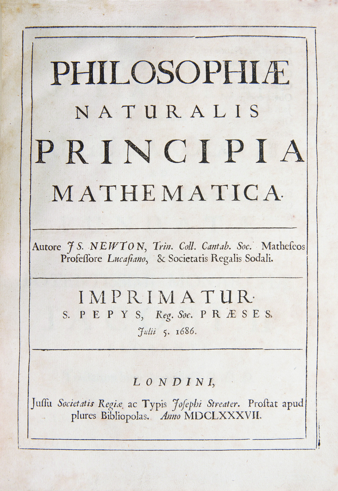
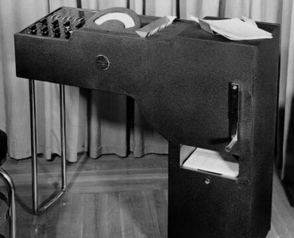
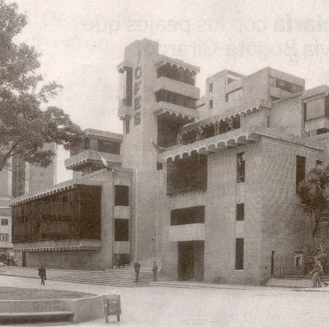

Juan Amos Comenio formula las bases de la educación moderna. Menciona la evaluación como parte de la actividad educativa.
Ver más.Antiguedad
En las universidades europeas medievales el sistema estándar de evaluación era la prueba oral que se presentaba en Latín.
Ver más.

Las universidades de Cambridge y Oxford lideran el cambio a un modelo de examen escrito para las pruebas matemáticas.
Modernidad
El presidente de la universidad de Harvard propone examenes de admision escritos estandarizados para ingreso a las universidades.
Ver más.{kind=link}
El francés Alfred Binet desarrolla una prueba estandarizada de inteligencia que posteriormente se integraría a la prueba IQ.
Ver más.El psicólogo y pedagogo estadounidense de la universidad de Columbia, Edward Thorndike desarrolla pruebas estandarizadas de aritmética, escritura, ortografía, dibujo y lectura.
Ver más.Se realiza la primera prueba del examen SAT (Scholastic Aptitude Test) en E.E.U.U.
Ver más.

IBM lanza la primera computadora-escáner para evaluación automática de pruebas.
Ver más.América Latina

Se funda en Colombia el ICFES con su dependencia principal el SNP - Servicio nacional de pruebas.
Ver más.{kind=link}
Se conforma la primera institución para la evaluación de la educacion en Mexico.
Ver más.Internacionalización
Se desarrollan las pruebas internacionales PISA para la comunidad de países de la OCDE. La primera prueba se realiza en el 2000.
Ver más.Actualidad

Se formulan algoritmos que permiten reconocimiento de patrones en múltiples dimensiones de informacion.
Ver más.